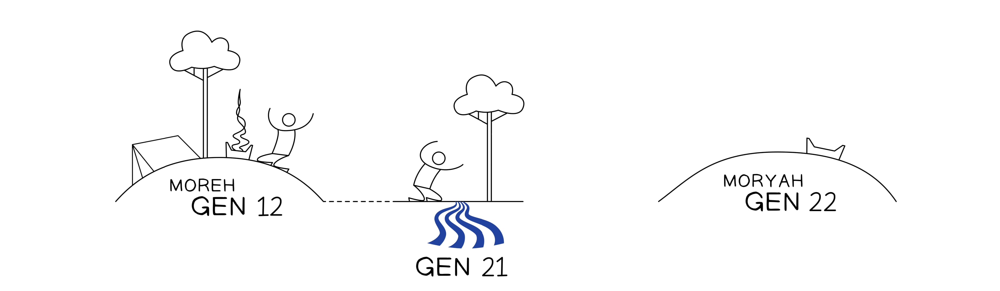

11 E aconteceu depois destas coisas,And it came about after these things,
que Elohim testou Avraham,that Elohim tested Avraham,
e disse-lhe:and he said to him,
““Avraham.Avraham.””
E ele disse:And he said,
““Eis-me aqui!Look, it’s me!””
22 E ele disse:And he said,
““Por favor toma teu filho,“Please take your son,
o teu único,your only one,
a quem amas,whom you love,
Yitskhaq,Yitskhaq,
e vai-te à terra de Moriá [“Visão” = (מריה)],and get yourself going to the land of Moriah [“Seeing” = (מריה)],
e faze-o subir ali como oferta de subida,and make him go up there as a going-up offering,
numa das montanhas que eu te direi.”on one of the mountains which I will say to you.”
33 E Avraham se levantou de madrugada,And Avraham rose early in the morning,
e albardou o seu jumento,and he bound up his donkey,
e ele tomouand he took
dois de seus moços com eletwo of his young men with him
e Yitskhaq seu filho,and Yitskhaq his son,
e partiu a lenha da oferta de subida,and he split the wood of the going-up offering,
e se levantou e foi ao lugar que Elohim lhe dissera.and he arose and he went to the place which Elohim said to him.
44 Ao terceiro dia,On the third day,
então Avraham ergueu os seus olhos,then Avraham lifted his eyes,
e viu (ראה) o lugar de longe.and he saw (ראה) the place from a distance.
55 E Avraham disse aos seus moços:And Avraham said to his young men,
““Ficai-vos aqui com o jumento,“Sit yourselves here with the donkey,
e eu e o moço,and I and the young boy,
iremos até lá,we will go to there,
e adoraremos,and we will worship,
e voltaremos a vós.”and we will return to you.”
66 E Avraham tomou a lenha da oferta de subida,And Avraham took the wood of the going-up offering,
e a pôs sobre Yitskhaq seu filho,and he placed upon Yitskhaq his son,
e tomou na sua mão o fogo e o comedor [= faca],and he took in his hand the fire and the eater [= knife],
e ambos foram, juntos como um.and the two of them went, together as one.
77 E disse Yitskhaq a Avraham seu pai,And Yitskhaq said to Avraham his father,
e disse,and he said,
““Meu pai.My father.””
E ele disse,And he said,
““Eis-me aqui, meu filho.“Look, it's me, my son.””
E disse,And he said,
““Eis o fogo e a lenha,“Look, the fire and the wood,
mas onde está o cordeiro para a oferta de subida?”but where is the sheep for the going-up offering?”
88 E Avraham disse,And Avraham said,
““Elohim proverá (יראה), o cordeiro para a oferta de subida, meu filho.”“Elohim will see to it (יראה), the sheep for the going-up offering, my son.”
E ambos foram, juntos como um.And the two of them went, together as one.
99 E foram ao lugar que Elohim lhe dissera,And they went to the place which Elohim said to him,
e Avraham edificou ali um altar,and Avraham built there an altar,
e pôs em ordem a lenha,and he arranged the wood,
e amarrou a Yitskhaq seu filho,and he bound up Yitskhaq his son,
e o pôs sobre o altar em cima da lenha,and he placed him upon the altar atop the wood,
1010 e Avraham estendeu a sua mão,and Avraham sent out his hand,
e tomou o comedor [= faca] para degolar seu filho,and he took the eater [= knife] to slay his son,
1111 e o mensageiro de Yahweh o chamou desde os céus,and the messenger of Yahweh called to him from the skies,
e disse,and he said,
““Avraham! Avraham!Avraham! Avraham!””
e ele disse,and he said,
““Eis-me aqui!Look, it's me!””
1212 E disse,And he said,
““Não estendas a tua mão contra o jovem!“Don't send out your hand toward the young one!
E não lhe faças coisa alguma,And don't do anything to him,
porque agora sei que és um que teme a Elohim,because now I know that you are one who fears Elohim,
e não retiveste teu filho, o teu único, de mim.”and you didn't withhold your son, your only one, from me.”
1313 E Avraham ergueu os seus olhos,And Avraham lifted his eyes,
e viu (ראה), e eis um carneiro de longe, preso num arbusto pelos chifres,and he saw (ראה), and look, a ram afar, caught in a bramble by its horns,
e Avraham foi e tomou o carneiro,and Avraham went and he took the ram,
e o fez subir como oferta de subida no lugar de seu filho,and he made it go up as a going-up offering in the place of his son,
1414 e Avraham chamou o nome daquele lugar,and Avraham called the name of that place,
““Yahweh proverá (יראה).“Yahweh will see to it (יראה).””
Por isso se diz hoje,Which is why, today, it is said,
““No monte de Yahweh, se proverá (יראה).“On the mountain of Yahweh, it will be seen to (יראה).””
1515 E o mensageiro de Yahweh chamou Avraham pela segunda vez desde os céus,And the messenger of Yahweh called to Avraham a second time from the skies,
1616 e disse,and he said,
““Jurei por mim mesmo (שבע), diz Yahweh,“I swear an oath (שבע) by myself, utterance of Yahweh,
porquanto fizeste esta coisa,on account of the fact that you did this thing,
e não me retiveste teu filho, o teu único,and you did not withhold your son, your only one,
aa1717 que certamente te abençoarei,that I will certainly bless you,
bbe certamente multiplicarei tua semente,and I will certainly multiply your seed,
cccomo as estrelas dos céus,like the stars of the skies,
c'c'e como a areia na beira do mar,and like the sand upon the edge of the sea,
b'b'e tua semente herdará a porta de seus inimigos,and your seed will inherit the gate of their enemies,
a'a'1818 e em tua semente todas as nações da terra encontrarão bênção,and all the nations of the land will find blessing in your seed,
porquanto obedeceste à minha voz.”on the heel of the fact that you listened to my voice.”
1919 E Avraham voltou aos seus moços,And Avraham returned to his young men,
e levantaram-se e foram juntos como um a Beer-Sheva (= Poço dos Sete (שבע))and they arose and they went together as one to Beer-Sheva (= Well of Seven (שבע))
e Avraham habitou em Beer-Sheva.and Avraham dwelt in Beer-Sheva.
Gênesis 22:1-19. Tradução e Design Literário por Tim Mackie para a BibleProject Classroom: Abraham (2021).Genesis 22:1-19. Translation and Literary Design by Tim Mackie for BibleProject Classroom: Abraham (2021).
Com esta história, a jornada de Deus com Avraham chega a um ponto culminante. A abertura desta história contém múltiplos hiperlinks de volta ao primeiro "teste" de Deus à fidelidade de Avraham. O fato de que recorda o chamado de Deus a Avraham em Gênesis 12:1-6 leva-nos a pensar que a totalidade da bênção de Deus (introduzida em Gn. 12:1-3) está em jogo. Ao lermos até o fim deste episódio, esta intuição se confirma (veja 22:18).With this story, God’s journey with Avraham comes to a culminating point. The opening of this story contains multiple hyperlinks back to God’s first “test” of Avraham’s faithfulness. The fact that it recalls God’s call to Avraham in Genesis 12:1-6 leads us to think that the entirety of God’s blessing (introduced in Gen. 12:1-3) hangs in the balance. As we read through to the end of this episode, this hunch is confirmed (see 22:18).
| Genesis 12:1-6Genesis 12:1-6 | Genesis 22Genesis 22 |
|---|---|
|
Gen. 12:1 "Vai-te (לך לך) da tua terra (ארץ) ... para a terra (אל הארץ) que te mostrarei (אשר אראך)."Gen. 12:1 "Get yourself going (לך לך) from your land (ארץ) ... to the land (אל הארץ) which I will show you (אשר אראך)."
Gen. 12:6 "E Avram passou pela terra ... até a árvore de carvalho de Moré (מורה)."Gen. 12:6 "And Avram passed through the land ... to the oak tree of Moreh (מורה)." |
Gen. 22:2 "Vai-te (לך לך) à terra (אל ארץ) de Moriá (מריה) ... onde eu te direi (אשר אמר אליך)."Gen. 22:2 "Get yourself going (לך לך) to the land (אל ארץ) of Moriah (מריה) ... where I will speak to you (אשר אמר אליך)." |
| Gen. 12:3 "E todas as famílias da terra encontrarão bênção através de você."Gen. 12:3 "And all the families of the land will find blessing through you." | Gen. 22:18 "E todas as nações da terra descobrirão bênção através de sua semente."Gen. 22:18 "And all the nations of the land will discover blessing through your seed." |
| Gênesis 22 Repete 12. Criado por Tim Mackie para a BibleProject Classroom: Abraham (2021).Genesis 22 Replays 12. Created by Tim Mackie for BibleProject Classroom: Abraham (2021). | |
Este "teste" (Heb. nissah / נסה) é o ponto culminante da relação de Deus com Avraham e do abuso pecaminoso de Avraham e Sara com Hagar e Yishmael. Relembre as estreitas relações paralelas entre esta história e a perda de Yishmael por Avraham em Gênesis 21:1-21.This "test" (Heb. nissah / נסה) is the culmination of God’s relationship with Avraham and of Avraham and Sarah’s sinful abuse of Hagar and Yishmael. Recall the tight parallel relationships between this story and Avraham’s loss of Yishmael in Genesis 21:1-21.
A - Avraham e Avimelek: Conflito Causado por EnganoA - Avraham and Avimelek: Conflict Caused by Deception
B - Avraham Perde Seu Filho Yishmael, Cuja Vida É Poupada por DeusB - Avraham Loses His Son Yishmael, Whose Life Is Spared by God
A' - Avraham e Avimelek: Conflito Resolvido por AliançaA' - Avraham and Avimelek: Conflict Resolved by Covenant
B' - Avraham Perde Seu Filho Yitskhaq, Cuja Vida É Poupada por DeusB' - Avraham Loses His Son Yitskhaq, Whose Life Is Spared by God
Gênesis 20:1-22:19 (Simplificado). Design Literário por Tim Mackie para a BibleProject Classroom: Abraham (2021).Genesis 20:1-22:19 (Simplified). Literary Design by Tim Mackie for BibleProject Classroom: Abraham (2021).
Esse claro conjunto de hiperlinks entre a perda de Avraham de Yishmael e Yitskhaq deixa claro que eles estão inter-relacionados. Isso fornece o contexto narrativo crucial para o teste de Deus a Avraham. Ele e Sara estavam dispostos a sacrificar sua integridade moral e abusar de uma escrava a fim de ganhar o filho prometido por sua própria sabedoria. Esse pecado resultou na expulsão da escrava e de seu filho, e aqui surge outro resultado. Se Avraham vai ser o veículo da bênção de Deus para as nações, Deus exige sua fidelidade e rendição total: Avraham entregará a vida de seu filho a Deus, confiando que Deus será capaz de cumprir suas promessas, mesmo diante da morte?This clear set of hyperlinks between Avraham’s loss and Yishmael and Yitskhaq make it clear that they are interrelated. This provides the crucial narrative context for God’s test of Avraham. He and Sarah were willing to sacrifice their moral integrity and abuse a slave in order to gain the promised son by their own wisdom. That sin resulted in the expulsion of the slave and her son, and here another result comes about. If Avraham is going to be God’s vehicle of blessing to the nations, God requires his faithfulness and total surrender: Will Avraham hand over the life of his son to God, trusting that God will be able to fulfill his promises, even in the face of death?
Esta é a primeira narrativa bíblica em que se diz que Deus "testa" o seu escolhido para discernir a sua fidelidade. É um tema rico que foi introduzido na história do Éden com a árvore do conhecimento do bem e do mal, e avança por múltiplas histórias que ecoam este motivo.This is the first biblical narrative where God is said to “test” his chosen one to discern their faithfulness. It is a rich theme that was introduced in the Eden story with the tree of knowing good and bad, and it carries forward into multiple stories that echo this motif.
| Deus Testa ...God Tests ... | VersículoVerse |
|---|---|
| Adão e Eva na ÁrvoreAdam and Eve at the Tree | Gen. 2:16-17 O SENHOR Deus ordenou ao homem, dizendo: "De toda árvore do jardim você pode comer livremente; mas da árvore do conhecimento do bem e do mal você não deve comer, porque no dia em que você comer dela você certamente morrerá."The LORD God commanded the man, saying, "From any tree of the garden you may eat freely; but from the tree of the knowledge of good and evil you shall not eat, for in the day that you eat from it you will surely die." |
| Noé Com a Construção da ArcaNoah With the Building of the Ark | Gen. 6:13-14 Então Deus disse a Noé ... "Faça para você uma arca de madeira de gofer; você fará a arca com cômodos, e deverá cobri-la por dentro e por fora com betume."Then God said to Noah ... "Make for yourself an ark of gopher trees; you shall make the ark with rooms, and shall cover it inside and out with pitch." |
| Israel nas Águas de MeribáIsrael at the Waters of Meribah | Exod. 15:25 Então ele clamou ao SENHOR, e o SENHOR lhe mostrou uma árvore; e ele a jogou nas águas, e as águas se tornaram doces. Lá ele fez para eles um estatuto e regulamento, e lá ele os testou.Then he cried out to the LORD, and the LORD showed him a tree; and he threw it into the waters, and the waters became sweet. There he made for them a statute and regulation, and there he tested them. |
| Israel Com o ManáIsrael With the Manna | Exod. 16:4 Então o SENHOR disse a Moisés: "Eis que farei chover pão do céu para vocês; e o povo sairá e recolherá a porção de cada dia diariamente, para que eu possa testá-los, se eles andarão em minha instrução ou não."Then the LORD said to Moses, "Behold, I will rain bread from heaven for you; and the people shall go out and gather a day's portion every day, that I may test them, whether or not they will walk in my instruction." |
| Israel no Monte SinaiIsrael at Mount Sinai | Exod. 20:20 Moisés disse ao povo: "Não tenham medo; pois Deus veio para testá-los, e a fim de que o temor dele permaneça com vocês, para que não pequem."Moses said to the people, "Do not be afraid; for God has come in order to test you, and in order that the fear of him may remain with you, so that you may not sin." |
| Israel Enquanto Vagam no DesertoIsrael as They Wander in the Wilderness | Deut. 8:2 "Você se lembrará de todo o caminho pelo qual o SENHOR seu Deus te conduziu no deserto nestes quarenta anos, para que ele pudesse te humilhar, testando-te, para saber o que estava no seu coração, se você guardaria os seus mandamentos ou não.""You shall remember all the way which the LORD your God has led you in the wilderness these forty years, that he might humble you, testing you, to know what was in your heart, whether you would keep his commandments or not." |
| Israel Com as Restantes Nações CananeiasIsrael With the Remaining Canaanite Nations | Judg. 2:21-23 "Eu também não expulsarei mais de diante deles nenhuma das nações que Josué deixou quando morreu, a fim de testar Israel por elas, se eles guardarão o caminho do SENHOR para andar nele como seus pais fizeram, ou não." Assim o Senhor permitiu que aquelas nações permanecessem, não as expulsando rapidamente; e não as entregou na mão de Josué."I also will no longer drive out before them any of the nations which Joshua left when he died, in order to test Israel by them, whether they will keep the way of the LORD to walk in it as their fathers did, or not." So the Lord allowed those nations to remain, not driving them out quickly; and he did not give them into the hand of Joshua. |
| Testes na Torá e Juízes. Criado por Tim Mackie para a BibleProject Classroom: Abraham (2021).Tests in the Torah and Judges. Created by Tim Mackie for BibleProject Classroom: Abraham (2021). | |
O padrão central gira em torno de Deus testando o seu escolhido para determinar se eles seguirão a sua instrução e assim se tornarão um veículo de sua bênção para os outros. As palavras de Deus no clímax da história confirmam que este é o objetivo do teste de Avraham.The core pattern revolves around God testing his chosen one to determine if they will follow his instruction and so become a vehicle of his blessing to others. God’s words at the story’s climax confirm this is the goal of Avraham’s test.
99 E foram ao lugar que Elohim lhe dissera,And they went to the place which Elohim said to him,
e Avraham edificou ali um altar,and Avraham built there an altar,
e pôs em ordem a lenha,and he arranged the wood,
e amarrou a Yitskhaq seu filho,and he bound up Yitskhaq his son,
e o pôs sobre o altar em cima da lenha,and he placed him upon the altar atop the wood,
1010 e Avraham estendeu a sua mão,and Avraham sent out his hand,
e tomou o comedor [= faca] para degolar seu filho,and he took the eater [= knife] to slay his son,
1111 e o mensageiro de Yahweh o chamou desde os céus,and the messenger of Yahweh called to him from the skies,
e disse,and he said,
““Avraham! Avraham!Avraham! Avraham!””
e ele disse,and he said,
““Eis-me aqui!Look, it's me!””
1212 E disse,And he said,
““Não estendas a tua mão contra o jovem!“Don't send out your hand toward the young one!
E não lhe faças coisa alguma,And don't do anything to him,
porque agora sei que és um que teme a Elohim,because now I know that you are one who fears Elohim,
e não retiveste teu filho, o teu único, de mim.”and you didn't withhold your son, your only one, from me.”
Gênesis 22:1-19. Tradução e Design Literário por Tim Mackie para a BibleProject Classroom: Abraham (2021).Genesis 22:1-19. Translation and Literary Design by Tim Mackie for BibleProject Classroom: Abraham (2021).
Faz sentido na lógica narrativa que Deus testasse Avraham e o chamasse a prestar contas por seus pecados contra Hagar. Nas falhas anteriores de Avraham, era ele quem ameaçava a promessa de Deus de uma futura semente que abençoaria as nações. Mas nesta história, Deus é aquele que ameaça o futuro da própria promessa de Deus.It makes sense of the narrative logic that God would test Avraham and call him to account for his sins against Hagar. In Avraham’s earlier failures, he was the one threatening God’s promise of a future seed who will bless the nations. But in this story, God is the one threatening the future of God’s own promise.
Esta história convida o leitor a um profundo mistério no coração da narrativa bíblica: O próprio propósito e promessa de Deus é o que determina o futuro do cosmos. Mas Deus também quis que seus parceiros humanos fossem o veículo principal através do qual seus propósitos são realizados. Avraham é tanto o problema quanto a solução para a promessa de Deus de abençoar as nações. E a história de Avraham e Sara é em si uma repetição microcósmica do papel da humanidade na história bíblica: Os humanos são tanto o problema de Deus quanto a solução para os seus propósitos.This story invites the reader into a deep mystery at the heart of the biblical narrative: God’s own purpose and promise is what determines the future of the cosmos. But God has also willed that his human partners would be the primary vehicle through which his purposes are carried out. Avraham is both the problem and the solution for God’s promise to bless the nations. And Avraham and Sarah’s story is itself a micro-cosmic replay of humanity’s role in the biblical story: Humans are both God’s problem and the solution to his purposes.
Esta tensão narrativa não é resolvida pelo resto da narrativa bíblica. Pelo contrário, ela é elevada a um ponto de crise no final da Bíblia Hebraica. Dessa forma, a história de Jesus apresentada nos evangelhos é o resultado natural dessa tensão teológica: Deus se torna o parceiro humano fiel que nos chamou para ser, mas que muitas vezes falhamos em ser.This narrative tension is not resolved by the rest of the biblical narrative. Rather, it is heightened to a crisis point by the end of the Hebrew Bible. In this way, the story of Jesus presented in the gospels is the natural outcome of this theological tension: God becomes the faithful human partner he has called us to be, but we often fail to be.
Frequentemente falhamos, mas não sempre! Nesta história, Avraham é apresentado como um modelo de fidelidade porque ele está disposto a entregar o filho amado da promessa de Deus ao próprio propósito paradoxal de Deus. Esta imagem poderosa é repetida na história do auto-sacrifício de Moisés pelos pecados de Israel (Êxod. 32-33), no auto-sacrifício de Davi por seus próprios pecados que afligem Israel (2 Sam. 24), e em última análise na figura composta do servo sofredor de Isaías 40-55, que, nos dizem...We often fail, but not always! In this story, Avraham is presented as a model of faithfulness because he is willing to surrender the beloved son of God’s promise over to God’s own paradoxical purpose. This powerful image is repeated in the story of Moses’ self-sacrifice for the sins of Israel (Exod. 32-33), in David’s self-sacrifice for his own sins that are afflicting Israel (2 Sam. 24), and ultimately in the composite figure of the suffering servant of Isaiah 40-55, who, we’re told ...
O Monte Moriá (מריה = “Visão do Monte”) faz uma ligação com o “carvalho de Moré” (מורה) de Gênesis 12:6, criando uma inclusão em todo Gênesis 12-22. Além disso, o Monte Moriá tem claros hiperlinks para o monte do templo, onde Davi mais tarde estabelecerá o local para o templo.Mount Moriah (מריה = “Mount Vision”) links back to the “oak of Moreh” (מורה) from Genesis 12:6, creating an inclusion around all of Genesis 12-22. Also, Mount Moriah has clear hyperlinks forward to the temple mount where David will later establish the site for the temple.
A frase “montanha de Yahweh” (הר יהוה) em Gênesis 22:14 é usada uma vez para o Monte Sinai (Num. 10:33) mas em outros lugares da Bíblia Hebraica sempre se refere ao Monte Sião, o monte do templo em Jerusalém (veja Isa. 2:3, 30:29; Mic. 4:2; Zac. 8:3; Sal. 24:3).The phrase “mountain of Yahweh” (הר יהוה) in Genesis 22:14 is used once for Mount Sinai (Num. 10:33) but elsewhere in the Hebrew Bible always refers to Mount Zion, the temple mount in Jerusalem (see Isa. 2:3, 30:29; Mic. 4:2; Zech. 8:3; Ps. 24:3).
“Monte Moriá” aparece apenas mais uma vez na Bíblia Hebraica, como o local onde os eventos do grande teste de Davi acontecem em 2 Samuel 24.“Mount Moriah” only appears one more time in the Hebrew Bible, as the location where the events of David’s great test take place in 2 Samuel 24.

O Padrão de Sacrifício na Colina de Avraham. Criado por Tim Mackie para a BibleProject Classroom: Abraham (2021).Avraham’s Hilltop Sacrifice Pattern. Created by Tim Mackie for BibleProject Classroom: Abraham (2021).
Será que nós, os leitores, temos alguma razão para crer que Deus não tirará a vida de Yitskhaq? Que informação nós temos que Avraham não tem?Do we, the readers, have any reason to believe that God will not take the life of Yitskhaq? What information do we have that Avraham does not?